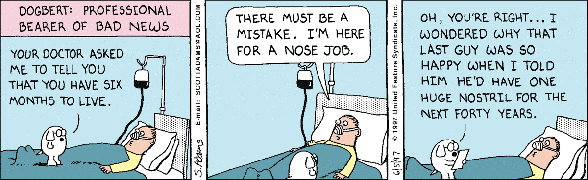

It's a run-of-the-mill day when suddenly your body fails you. You experience migraines, nausea, vomiting, and are feeling extremely ill. You decide to go to the emergency room at the hospital for help. Despite expecting immediate care, you're handed medical forms. Then the person processing your intake forms asks you about your medical history, but you cannot respond. You pass out.
 Image taken from Dilbert.com
When a person requires immediate medical care, they aren't always able to give their healthcare providers information that could be useful regarding their treatment. In non-emergent situations, people are sometimes forgetful at the doctor's office. It's easy to find yourself lost in all the medical jargon and prescription names. HealthScope offers a solution to all of these situations and more. Imagine if a person had a bracelet or card, they could show providers that contained all of that person's medical data. Wouldn't that be miraculous? The ability of the patient's healthcare provider to administer timely and effective medical care would increase. Reducing a patient wait time for treatment is significant because in healthcare, every second matters.
HealthScope is that miracle. No longer would the provider have to wait for the results of an exam the patient had recently. The number of repeat exams would go down. Without the excess exams, healthcare facilities could reduce the workload. A person going from hospital A to hospital B would not have to get any repeat exams, and the physicians at hospital B would be able to treat the patient based on their medical data from hospital A. Additionally, increasing the efficiency of the medical field would motivate patients to go regularly to see their doctors'. With people going to their regular check-ups, potential diseases could be caught early on, giving that patient their best chance at being treated and complications of a disease process.
Keep up with the latest HealthScope news